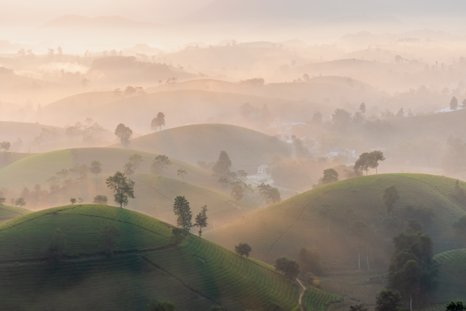
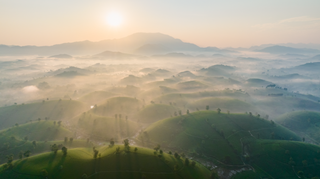
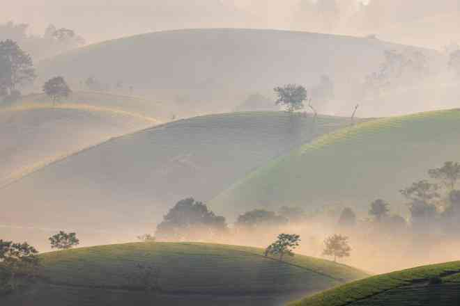
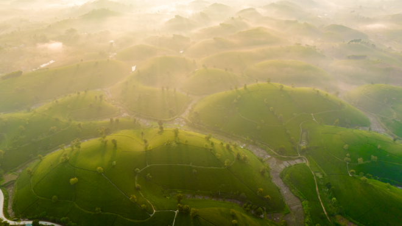

Đồi chè Long Cốc nằm ở xã Long Cốc, huyện Thanh Sơn, tỉnh Phú Thọ. Trải dài trên không gian hơn 600ha, những đồi chè có hình dáng như bát úp, đều đặn nằm thư thái nằm bên nhau, tạo nên khung cảnh như được tỉ mẩn tạo nên bởi một bàn tay nghệ nhân nào đấy.
Nơi đây được mệnh danh là “chốn bồng lai trên đất trung du”, bởi vẻ đẹp thanh thuần, mộc mạc nhưng thoát trần mỗi khi thời tiết chuyển mùa. Nắng vàng ươm hay sương giăng đều sẽ tạo nên những khung cảnh đặc biệt cho quang cảnh tại Long Cốc.
Theo kinh nghiệm của người nông dân, những đồi chè sẽ nhú mầm và có màu đẹp nhất từ tháng 3 đến tháng 12, tạo nên tấm thảm xanh mướt mắt đầy sức sống. Từ tháng 12 trở đi, cây chè sẽ được đốn “ngủ đông”.
Đặc biệt, trong thời khắc chuyển giao giữa ngày và đêm lúc bình minh, đồi chè Long Cốc thay đổi triệu sắc thái chỉ trong vài giờ, khiến con người được mãn nhãn chiêm ngưỡng các bức tranh thiên nhiên tuyệt sắc.
Theo anh Nguyễn Anh Chiêm (Hà Nội), anh cùng những người bạn của mình đã quyết định cắm trại tại khu vực săn bình minh ở Long Cốc, nhằm thuận lợi nắm bắt mọi khoảnh khắc. Và vượt ngoài mong đợi, khoảng thời gian từ 5 giờ lúc trời còn tờ mờ sáng cho đến khi mặt trời đã lên cao, Long Cốc được thiên nhiên phối các gam màu tuyệt đẹp.
Đặc biệt vào quãng thời gian lúc 5 giờ sáng, những đồi chè ẩn mình trong sương khói bảng lảng và chìm trong gam màu lạnh, đối kháng với mặt trời với sắc nóng đang lên.
Từ khoảnh khắc này toàn bộ khung cảnh Long Cốc bắt đầu chuyển sắc sau mỗi phút mặt trời lên, với gam màu ấm dần và làm lộ rõ màu xanh của lá chè mướt mát.
Vào những ngày tháng 10 khi thời tiết chuyển từ thu sang đông, sương bao phủ dày đặc những đồi chè, và chỉ tản đi, thưa thớt dần khi nắng lên.
Trải nghiệm cắm trại và theo đuổi những khung cảnh ở
Long Cốc thật sự rất tuyệt. Mỗi phút trôi đi tôi lại như thấy một cảm xúc khác của thiên nhiên vậy
, anh Nguyễn Anh Chiêm cho biết.
Những cây chè đã gắn với cuộc sống của người nông dân nơi tỉnh Phú Thọ, là sản phẩm chủ lực của ngành nông nghiệp, cũng đồng thời là hình ảnh tạo thương hiệu cho ngành du lịch nơi đây.
| Họ tên | Ngày sinh | Giới tính |
|---|---|---|
| Trần Anh Đức | 03/08/1993 | Nam |
| Kiều Thị Thu Hằng | 04/09/1991 | Nữ |
| Vương Thị Lê Na | 06/10/1991 | Nữ |